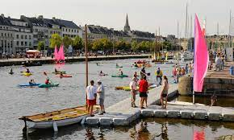

Explorez Caen
Les revenus influencent le choix des expériences présentées sur cette page : en savoir plus.

Europe > France > Basse-Normandie > Caen
Terre d'histoire et de culture
Le centre historique de Caen, avec ses monuments médiévaux, ses églises romanes et ses monuments commémoratifs poignants, témoigne de l'histoire tourmentée de cette ville portuaire, victime des conflits majeurs de Normandie. Aujourd'hui, la population estudiantine dynamique fait souffler un vent de modernité sur la ville, avec ses nombreux bars, restaurants et marchés.
Caen : les Immanquables
Se Divertir
Des lieux à voir , des rue - explorer et des expériences
emblématiques à Caen !